Activity: Virtual component editor
This activity guides you through the process of laying out an assembly using the Virtual Component Structure Editor, and then publishing the assembly to create the basic design which is further refined.
Objectives
The Virtual Component Structure Editor allows a designer to use Solid Edge assembly sketches as a component layout for a new assembly. The orientation and positioning of future parts and subassemblies can be defined in the new assembly as well as existing parts and subassemblies. In this activity, you will use a Solid Edge assembly sketch to define geometric positions of parts that will be created in a top-down method. When the virtual components are published, the files needed to complete the assembly will exist and the sketches will be used to create the new geometry.
Open vc.asm located in the activity files download folder.
Choose the Tools tab→Assistants group→Component Structure Editor command
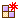
.Click the Virtual assembly option to set the type. Type Frame in the Name box and press Enter.
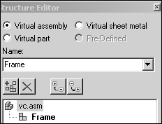
Click the Frame assembly, and then click the Virtual part option. Enter Support in the Name box.
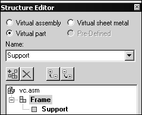
Click the Frame assembly, and add the virtual parts Front Axle and Rear Axle.
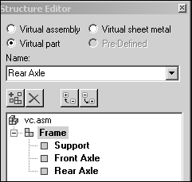
Click the Virtual assembly option and enter Wheel in the Name box. Enter Wheel again to create a second assembly of the same name.
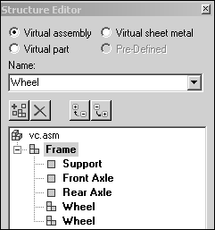
Select the Wheel assembly and click the Virtual part option. Enter Hub, and then enter Tire in the Name box.
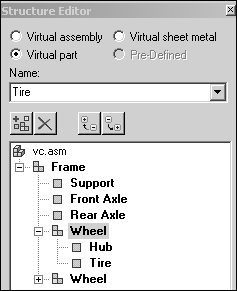
Select vc.asm. Click the Virtual sheet metal option and add the sheet metal part Deck, then click OK to exit the Virtual Component Structure Editor.
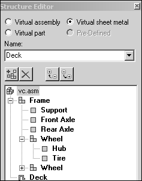
Assign geometry from an existing sketch in vc.asm to parts in the virtual component structure.
Layers are used on the sketch so that geometry can easily be selected and assigned to the proper virtual component. Once assigned, a graphic sketch element cannot be selected, preventing geometry being assigned to multiple virtual components.
On Assembly PathFinder, expand the assembly structure as shown. Right-click Sketch_1 and select Edit Profile.
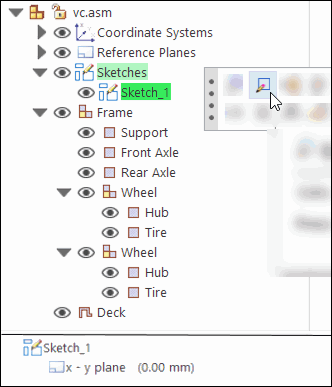
Click the Layers tab on PathFinder.
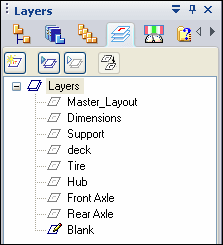
Right-click the Support layer and click Make Active.
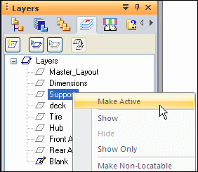
On Assembly PathFinder, right-click the virtual part Support and click Edit Definition.
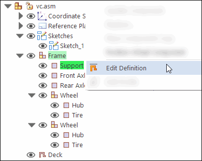
Using the left mouse button, drag a box around the sketch to select everything on the layer. Click the Accept button.
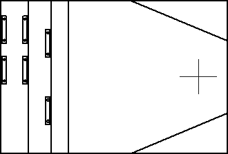
After clicking Accept in the previous step, the origin of the orientation axis is ready to be defined. To select the origin of the axis, click the midpoint of the left most vertical line (point 1) as shown. To orient the x axis, click the midpoint of the right most vertical line (point 2) as shown.
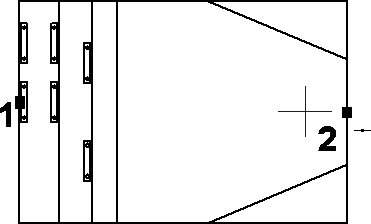
Click Finish.
In Assembly PathFinder select the Layers tab and right-click the layer Front Axle and make it active as shown.
Displayed geometry that has been assigned to a virtual component is not selectable when editing the definition of another virtual component.
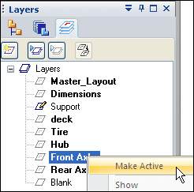
On Assembly PathFinder, right-click the virtual component, Front Axle, and click Edit Definition.
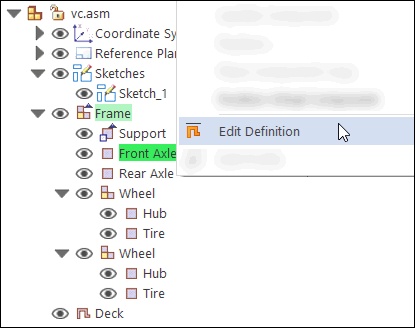
Select the front axle as shown and click Accept.
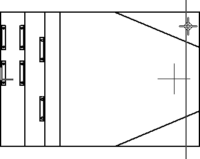
Position the front axle by selecting the origin point of the axis to be the midpoint of the line as shown (point 1) and to orient the axis, select the midpoint of the right-most vertical line as shown (point 2), then click Finish.
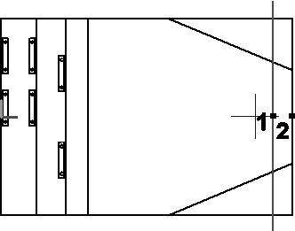
In Assembly PathFinder, click the Layers tab and make Rear Axle the active layer. Click the Assembly PathFinder tab, then right-click the virtual component Rear Axle and choose Edit Definition. Select the rear axle and accept. Orient the axis using the midpoints of the lines shown below, and click Finish.
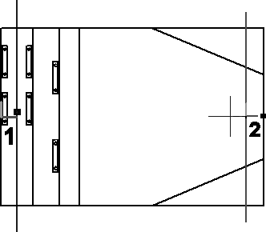
Click the Layers tab. Right-click the layer Hub and make it active.
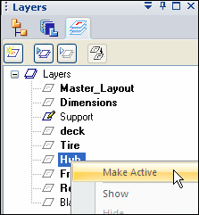
Right-click Layers and click Hide All Layers.
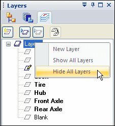
Geometry that has been previously added to virtual components cannot be hidden by sketch layers and is not available to be added to additional virtual components.
On the Layers tab, show the layer Rear Axle.
On Assembly PathFinder, right-click the virtual component Hub and click Edit Definition. Use a fence to select all the geometry on the layer Hub and click Accept.
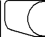
Orient the axis using the points shown below, and click Finish.
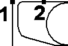
On the Layers tab, make the layer Tire active and hide the layer Hub.
On Assembly PathFinder tab, right-click the virtual component Tire and click Edit Definition. Use a fence to select all the geometry on the layer Tire and click Accept.
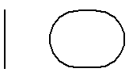
Orient the axis using the points shown below, and click Finish.
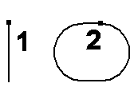
On the Layers tab, show the layer Front Axle.
On Assembly PathFinder, right-click the second occurrence of the assembly Wheel and click Position Virtual Component.
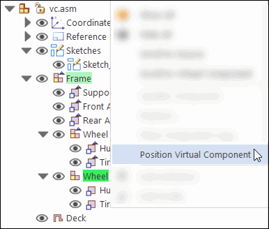
Click the top of the vertical line that represents the front axle.
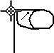
On the Layers tab, make the layer Deck the active layer and hide all the other layers.
On Assembly PathFinder, right-click the virtual component Deck, and click Edit Definition. Use a fence to select all the geometry on the layer Deck, and accept. Orient the axis using the two points shown, and then click Finish.
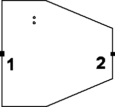
On the Layers tab, show all the layers.
Click Close Sketch to exit the sketch, and then click Finish.
Create component sketches in three existing parts to position the parts in the virtual assembly.
In the Parts Library tab of PathFinder, right-click small_motor.par and click Open in Solid Edge. Browse to the activity files download location.
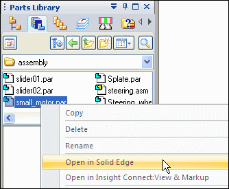
Choose the Home tab→Sketch group→Component Sketch command.
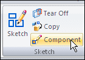
Create the sketch on a plane parallel to the top reference plane. Use the keypoint shown to position the parallel plane.
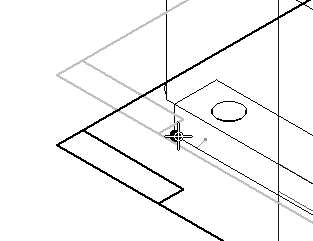
Choose the Tools tab→Virtual group→Component Image command.
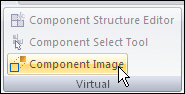
Click Accept to add the highlighted geometry to the sketch.
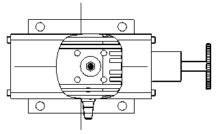
Choose the Home tab→Draw group→Project to Sketch command  and include the edges shown.
and include the edges shown.
The Project to Sketch command is needed to add precise geometry to the sketch in order to accurately position the part.
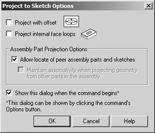
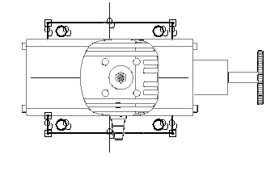
Click Close Sketch. Name the sketch small_motor_sketch.
Click Finish. Save and close the file.
In the Parts Library tab of PathFinder, right-click wide_seat.par and click Open in Solid Edge.
Create a component sketch on a plane parallel to the top reference plane. Use a keypoint on the bottom face of the mount as shown to position the sketch’s reference plane.
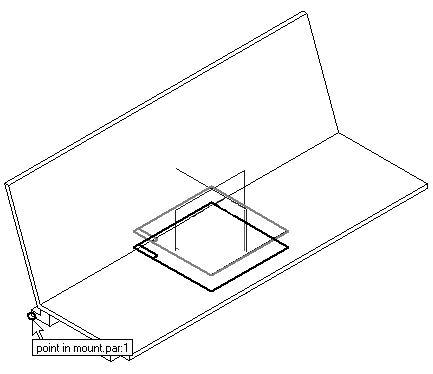
Choose the Component Image command. Accept the highlighted geometry, and then select the Project to Sketch command and include the cutouts and edges shown.
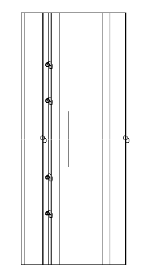
Click Close Sketch. Name the sketch wide_seat_sketch.
Click Finish. Save and close the file.
In the Parts Library, right-click steering.asm and click Open in Solid Edge. Activate all the parts in the assembly. Create a component sketch on a plane parallel with the top reference plane. Use the keypoint shown to position the reference plane.
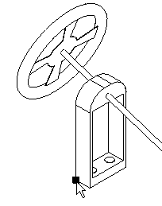
Click the File tab→Settings tab→Options command, and then click the Inter-Part tab. Make sure the Project to Sketch command in Part and Assembly Sketches check box is selected.
Choose the Project to Sketch command. Select the geometry shown in the sketch. Set the project to sketch options as shown.
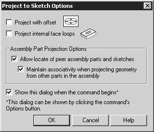
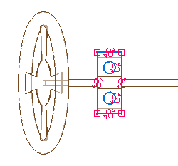
Click Close Sketch. Name the sketch steering_sketch.
Click Finish. Save and close the file. This returns you to the assembly.
Choose the Component Structure Editor command, and drag the three Solid Edge files where you created component sketches into the assembly, then click OK.
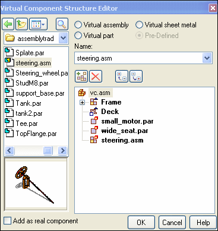
The parts with the component sketches will now be positioned in the virtual assembly. On the Assembly PathFinder, right-click Sketch_1, and then click Edit Profile.
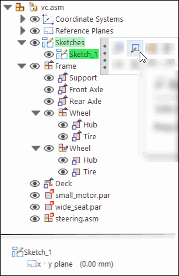
On the Layers tab, hide the layers named Master_Layout and Dimensions, if they are not already hidden.
In Assembly PathFinder, right-click the virtual component small_motor.par and click Position Virtual Component.
Select the sketch plane shown. The component sketch displays in the preview area. Click OK.
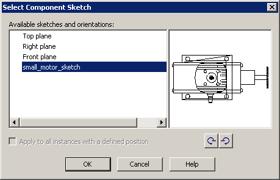
Observe the prompts. On the keyboard, press A to rotate the motor into the position shown. Click to the left of the sketch and place the component approximately where shown.
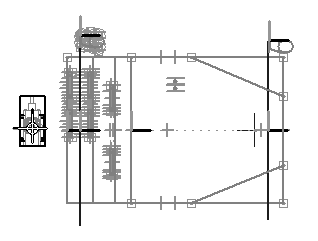
Click the Home tab. In the Relate group, turn off Relationship Handles
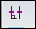
.In the Relate group, click the Connect command
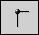
, and connect the center of the circles shown below.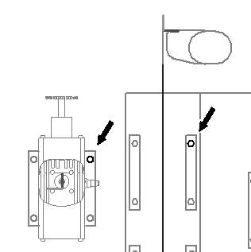
Click the Select command. In Assembly PathFinder, right-click the virtual component wide_seat.par and click Position Virtual Component.
Use the same procedure to position the seat as you used to position the component motor. Use the Connect command to position the seat using the circles shown.
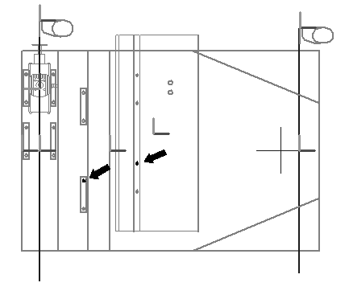
Click the Select command.
In Assembly PathFinder, right-click the virtual component steering.asm and click Position Virtual Component.
Use the same procedure used to position the seat to position the steering wheel. Use the Connect command to position the steering wheel using the circles shown.
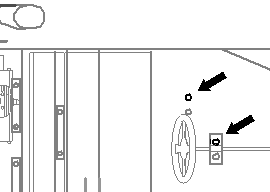
Click Close Sketch to exit the sketch. Click Finish.
Save the assembly.
Choose the Tools tab→Assistants group→Publish Virtual→Publish Virtual Component command .
This creates real components from the virtual components.
In the Publish Virtual Components dialog box:
-
In the Document Location column, use the Set Path shortcut command to set the path to correspond to the directory structure you have been using for this activity.
-
Ensure that you are using the correct metric templates. Right-click and the choose Set Template to change the template.
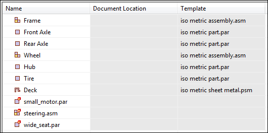
Click Publish.
Notice that now there are real parts Assembly PathFinder.
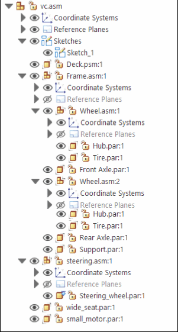
Activate all the parts.
In Assembly PathFinder, right-click support.par and then click Edit.
Choose the Home tab→Draw group→Symmetric Offset command  , and enter the values shown.
, and enter the values shown.
Set the selection type to Chain.
Select the rectangular perimeter of the sketch as shown below.
Accept the selection.
Click the Select tool and use QuickPick to select the region shown. Extrude the selection 8 mm in the +Z direction.
Click the Symmetric Offset command. Set the selection type to Single. Using the same values as before, select the 5 lines shown below. Accept the selection.
Click the Select tool. Select the region shown below.
Set the selection mode to Add Mode as shown below.
Continue selecting the additional regions required to extrude the remainder of the frame and extrude them 8 mm in the +Z direction.
Use QuickPick to select the regions easily.
Save and close the file to return to the assembly.
On Assembly PathFinder, select frame.asm and then choose Home tab→Assemble group→Ground relationship.
This grounds the top level of the frame such that additional relationships can be added to the remaining parts without moving the frame.
On Assembly PathFinder, right-click the part Front Axle.par and then click Edit.
Use the Coincident Plane command to create a plane parallel to, and 5 mm below, the x-y plane.
Use the Project to Sketch command to project the line of the front axle onto the plane.
Draw a rectangle with a short side that is 5 mm wide and as long as the front axle sketch element. Lock the sketch onto the plane you created.
Use the Revolve command  to create an axle with a radius of 5 mm by selecting the rectangle you created. Use the included line in the front axle sketch
to represent the centerline of the 3D axle. Sweep the revolution 360 degrees to create the axle.
to create an axle with a radius of 5 mm by selecting the rectangle you created. Use the included line in the front axle sketch
to represent the centerline of the 3D axle. Sweep the revolution 360 degrees to create the axle.
After creating the revolved protrusion, click Close and Return.
On Assembly PathFinder, right-click the part Rear Axle.par and click Edit. Create a revolved protrusion on a parallel plane 5 mm below the x-y plane, as you did with the Front Axle in previous steps. The radius of the protrusion is 5 mm.
Click Close and Return to return to the assembly.
On Assembly PathFinder, right-click the part Hub.par and click Edit.
Create a 360° revolved protrusion on a parallel plane 5 mm below the x-y plane. Define the axis of revolution using the dashed line as shown. Use the Project to Sketch command with the Wireframe Chain option to select both of the sketch elements. Click Finish to complete the revolved protrusion.
In Assembly PathFinder, right-click the part Tire.par and click Edit.
Create a 360° revolved protrusion on a parallel plane 5 mm below the x-y plane. Define the axis of revolution using the dashed line as shown. Click Finish to complete the revolved protrusion.
Click Close and Return.
In Assembly PathFinder, right-click the sheet metal part Deck.psm and click Edit.
Select the region shown and use the Home tab→Sheet Metal group→Tab command to create the deck.
The circles will be cutouts in the deck. The extent of the tab is below the profile plane, and the sheet metal thickness is 3.00 mm.
Click Close and Return.
In Assembly PathFinder, right-click the assembly named Frame.asm and click Edit.
In Assembly PathFinder show the reference planes.
On the Home tab in the Pattern group, click the Mirror Components command.
In Assembly PathFinder, select each occurrence of Wheel.asm and accept.
Select the Front (XZ) reference plane as the plane to mirror about.
If a mirrored component is symmetrical about the mirror plane, the component is rotated rather than mirrored. The rotation occurs about an axis residing on the specified plane. The plane of rotation is perpendicular to the specified plane.
In the Mirror Components dialog box, set the options shown and click OK, then click Finish.
Click Close and Return to return to the top level assembly.
Assembly relationships can be edited to further position and constrain the parts.
Save and close this file. This concludes this activity.
In this activity you learned how to create a virtual assembly structure using virtual components. Sketch geometry in the assembly file was assigned to virtual part files and once published, the sketch geometry was moved into those files and used to create parts. Existing parts were placed in the virtual structure and positioned using component sketches. This is a top down approach to laying out and modeling complex assemblies.
-
Click the Close button in the upper- right corner of this activity window.
Answer the following questions:
-
How is assembly sketch geometry assigned to a virtual component?
-
What is the purpose of a component sketch?
-
What is created when virtual components are published?
-
How is assembly sketch geometry assigned to a virtual component?
The geometry can be assigned by editing the profile of a sketch, and right clicking a virtual component and editing the definition. Geometry from the sketch is assigned and oriented in the position it will be when the component is published.
-
What is the purpose of a component sketch?
A component sketch creates sketch geometry in an existing part or assembly needed to position the component in a virtual assembly such that when the virtual assembly is published, the part will be in the correct position relative to the other components in the assembly.
-
What is created when virtual components are published?
Part, sheet metal and assembly files are created from designated templates and if sketch geometry has been assigned to these components, sketches will exist in the newly created documents. The pathfinder structure is the same as it was in the component editor. Existing parts that have been positioned with component sketches are placed in the assembly.